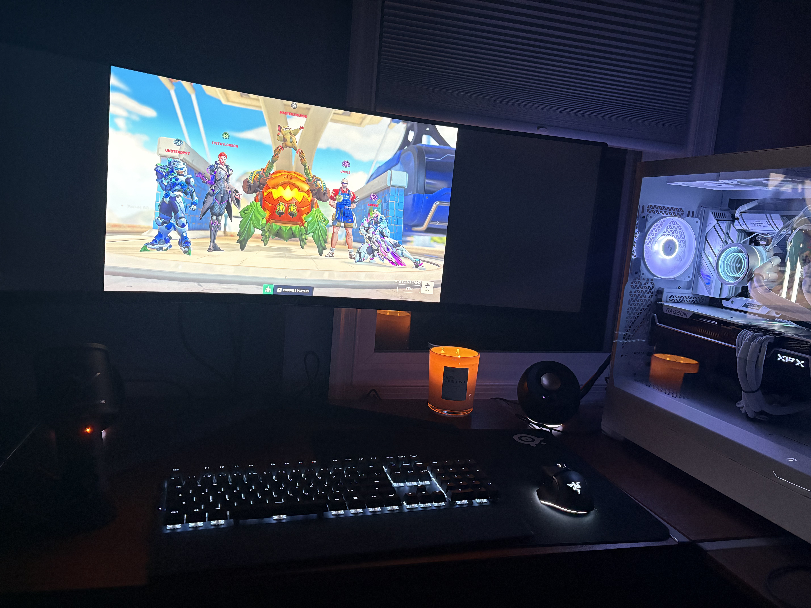

Pretty much guaranteed to have typos and grammar mistakes.
Oct 6th, 2026
Home Lab Router Configuration
NetworkingHome LabRouter
Configuration
Today I continued building my home networking lab by configuring a Cisco ISR4331 router and
establishing a reliable management connection from my Windows PC. The goal was to get the router
into a clean, usable state and create a foundation for future networking and security projects.\
I started by working through the router's initial configuration and resetting it to a clean
state. Because the router had an unknown username and password from its previous configuration,
I had to perform a password recovery and factory reset. I used the router's ROMMON environment
to temporarily disable the existing startup configuration, boot the router, erase the old
configuration, and restore the configuration register to its factory default value. This gave me
a clean starting point for the rest of the lab.\
\After the reset, I configured the basic management settings on the router. This included
creating a local administrator account, securing the console and VTY lines, configuring a
hostname and domain name, generating RSA keys, and enabling SSH version 2. I also saved the
configuration to NVRAM so that the settings would persist after a reboot.\
Next, I connected my Windows PC directly to one of the router's Ethernet interfaces. I created a
small isolated lab network between the PC and router rather than immediately connecting the
router to my home network. This allowed me to test the router safely without changing or
disrupting my existing home network.\
Initially, the Ethernet connection on my Windows PC did not have an IP address because there was
no DHCP server configured on the router. I configured static addressing on both sides of the
connection. After doing so, I was able to successfully ping the router from my PC.\
I then encountered another issue when I tried to ping the PC from the router. The physical
connection and IP configuration were working, but the router's ping requests were not receiving
a response. I eventually determined that Windows Firewall was blocking inbound ICMP traffic.
After enabling the appropriate ICMPv4 inbound rule, the router was able to successfully ping the
PC.\
With basic connectivity working in both directions, I moved on to SSH. My first SSH attempt
failed with a key-exchange error because the version of Cisco IOS XE running on the router only
offered older Diffie-Hellman key-exchange algorithms that modern OpenSSH clients no longer
accept by default.\
I worked around the issue by explicitly allowing the older key-exchange algorithm for this SSH
connection. The next attempt produced another compatibility error, this time involving the
router's older RSA host-key algorithm. I added the appropriate host-key compatibility option to
the SSH command as well.\
After making those adjustments, SSH reached the authentication stage. I initially became
confused because the SSH prompt displayed my Windows username. I realized that SSH was
attempting to use the username I had specified in the SSH command, which needs to correspond to
the local administrator account configured on the Cisco router rather than my Windows account.
After using the correct Cisco username and password, I successfully connected to the router over
SSH.\
This was a useful exercise because I encountered several problems that would not necessarily
appear in a simple networking tutorial. I had to work through password recovery,
configuration-register settings, Windows firewall behavior, and SSH compatibility between an
older network device and a modern operating system. Each issue required looking at the actual
error message and determining which layer of the connection was failing.\
At the end of the session, I had a functioning Cisco ISR4331 home lab with secure remote
management over SSH and a dedicated connection between my PC and the router. I also gained more
practical experience troubleshooting connectivity problems instead of simply following a
configuration guide.\
My next goal is to continue expanding the lab by configuring additional router interfaces and
eventually integrating other networking equipment. I want to use the environment for hands-on
practice with routing, switching, firewalls, network troubleshooting, and security rather than
simply configuring devices without a practical purpose.\
Aug 22, 2026
How I Made This Website
Web DevelopmentHTMLCSS
In my WGU coursework, I just finished a course called "Web Development Foundations." In this
course, I learned the basics of web development, including HTML and CSS. I learned how to create
a website from scratch, in which, my final project was to create a personal portfolio website.
I had AI help generate a website previously before this class, but I wanted to get the hands on
experience of creating a website from scratch. I also wanted a website that was simple and
properly
structured.
So, I decided to ditch the old AI-generated website, and this is what I came up with. I adapted
the
pages, documents, and images from my WGU project. I'm
finding
the blog portion of this website to actually be fun, even though people are most likely not
going to read it. It's a good way for me to solidify what I have learned by summarizing projects
and experiences in my own words. It's also a great way to showcase to potential employers what
experiences I have had and how I think.
Continuing with the structure of the website, I edit my code locally in Visual Studio Code, and
sync it with my Github repository.
Github Pages is a free way to host a website. I don't need a custom domain name, so this is a
great option for me.
This is the tutorial that I followed:
https://docs.github.com/en/pages/getting-started-with-github-pages/creating-a-github-pages-site.
Keep in mind that repo name has to exaclty match your username for the website to have a shorter
URL. For example, my github username
is "cadenkingit", so the repo name should by "cadenkingit.github.io" for the website to be
hosted at "https://cadenkingit.github.io".
Otherwise, it will be hosted at "https://cadenkingit.github.io/repo-name". Additionally,
index.html has to be in the root of the repository,
and not in a subfolder. Otherwise, the website will not load properly. The index.html file is
the default page that is loaded when someone visits the website. I
originially had home.html as my default page, so I had to change it to index.html after some
troubleshooting.
Aug 20, 2026
Heavily Corrupted Windows Files Computer Fix
Windows 11Corrupted System Files
Yesterday, I was about to play games with my cousin, but upon opening their gaming laptop, a
Bitlocker key screen appeared.
This was strange because they did not enable Bitlocker on their computer. I have personally set
up computers with Bitlocker
before at Virginia Green, so it was strange when this appeared. Keep in mind, my cousin did not
know what Bitlocker was,
and they didn't intentionally enable it on their computer.
I helped them log in with their Bitlocker key that was automatically provided by signing into
their Microsoft account online. My
plan was just to disable Bitlocker and move on, however, their computer crashed upon boot. I
forgot what the exact error was, but,
essentially, something went wrong in Windows' boot process, and it entered WinRE.
No problem! I could just repair the corrupted files with the automatic repair tools in WinRE!
Nope. I don't remember a time those
automatic repairs have every been successful from my experience. So, I utilized sfc, dism, and
chkdsk. Actually, before I could use
dism on the windows files, I had to decrypt the C: drive because of Bitlocker. I disabled
BitLocker in the administrator command prompt
within WinRE (SHIFT + F10, btw). Sfc and chkdsk could not find anything, and dism could not
even
run. My theory is that the Windows Update Client files were also corrupted.

At this point, I spent more time than I would have liked troubleshooting this. Thankfully,
my cousin did not have anything she needed on the computer. So, I decided to do a clean install.
I've done this multipe times before with a USB stick and changing the boot order in the UEFI
settings. However, this was the first time that a clean install FAILED for me.

Originally, I could have still clean installed and save the data, however, something in the
Windows
system partition was so corrupted that I could not clean install without completely deleting the
partitions. I utilized diskpart and the native GUI partition display in the clean install
Windows
setup to do this. Again, thankfully they did not need any data on this computer, so I could
delete
these. After deleting the partitions, I was able to successfully clean install Windows.
Finally, I downloaded all the laptop-specific drivers and apps, signed into things, and
personalized the PC. It was now fixed and ready for use again. I'm a good cousin :).
I don't know the original cause for sure, but given that they hardly open their computer, it was
most
likely an interrupted Windows update. Or malware (one of the downsides of downloading some games
on the internet from non-reputable places).
Aug 19, 2026
Jeremy's IT Lab CCNA Enterprise Network MegaLab Notes
CCNA MegaLabJeremy's IT Lab
A little while back in April and May, I completed Jeremy's IT Lab CCNA Enterprise Network
MegaLab. This lab was a great way to practice
and learn more about networking. I took notes while doing the lab, and I wanted to share them
here. I hope they are helpful to anyone else who is doing this lab or studying for the CCNA.
I highly recommend Jeremy's IT Lab for anyone studying for the CCNA.
Click here to view my notes on Google Drive.
Here's the plaintext link for my cyber-concious folk:
https://drive.google.com/drive/folders/1E1UTSmxqc0wOSLK0XIsNAIzpz3BlIQVt?usp=drive_link.
Aug 18, 2026
My Gaming PC
Gaming PCTroubleshooting PC Build
One of my favorite projects to date was building my own gaming desktop. I have used this
computer every day
I could since I built it. Although not necessarily a complex project, it was what instilled my
passion for
computers and technology in the the strongest way. There is nothing better than hands-on
experience for learning.
During the time I built this computer, I was studying for my CompTIA A+ core 1 certification
exam, so it was a great
way to apply what I was learning.
My cousin previously built a computer, so I asked for some guidance from them. They recommended
pcpartpicker.com to
choose compatible parts, which ended up working out great. During the time, RAM and GPU prices
weren't nearly as high
as they are now, so thankfully I was able to build a high performing computer at a reasonable
price. Here's an image of
my build (yes, I play Overwatch, unfortunately):

I really had no trouble whatsover building it and setting it up. Once all the parts were
delivered, I assembled and set it
up in a little over a day. I used a usb stick to install Windows 11, and all the other parts
were a matter of following the
assembly instructions. However, I did have one time where there was a significant issue
with the computer.
It was about a year after I built it. At the time, I was living at an old apartment
complex near my college, and one day,
the computer would not boot. The main indicator was the cpu light displaying amber on the
motherboard, which indicated a cpu issue during the boot process. Ultimately, I sent the cpu
back to the manufacturer so they could test it. Ultimately, they replaced it, and actually gave
me
a better cpu than I originally had because it was in short supply. I got the cpu back, replaced
it,
and... my computer still would not boot. For a moment, I thought that my diagnosis of the cpu
being
the issue was wrong, but I reassured myself that it was because they manufacturer confirmed that
there
was an issue with it. I did some more troubleshooting, and I ended up replacing the motherboard
as well.
But, I didn't want to go through the RMA process again (I was impatient after waiting for my cpu
for 2 months),
so I just bought a new motherboard. After replacing the motherboard, the computer was fixed.
My theory was that the old wiring of the apartment complex and my old power surge protector
caused a power surge
that fried my motherboard and cpu, either during a storm or just unclean power. To protect
against future incidents, I
bought a new and better surge protector. I didn't buy a UPS because I didn't want to spend the
money, but buying this would
have been a good idea.
Overall, I highly recommend building your own computer if you are passionate about technology
and are a gamer. It's a rewarding and educational experience
and still something that I use every day! Although, those RAM and GPU prices today...
No posts match your search.